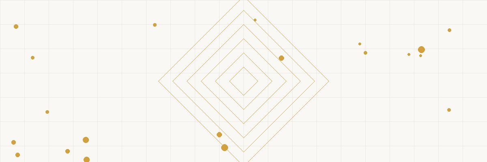

BUILDING PURCHASE COST SEG ACCELERATED ($1M Commercial) STUDY DEPRECIATION ───────────────── ═══════════════════ ───────────────── • Without study: ──╲ ╱── • 5-year: carpets, 39-year straight ───╲┌──────────┐╱─── appliances, fixtures line = $25,641/yr ────╳│ RECLASSIFY │╳──── • 7-year: furniture, • With study: ───╱└──────────┘╲─── certain equipment 30-40% reclassed ╱ ╲ • 15-year: land to 5/7/15 year improvements, parking BEFORE STUDY: AFTER STUDY: YEAR 1 RESULT: ───────────────── ═══════════════════ ───────────────── • Yr 1 deduction: • $350K → 5-year • $350K × 100% bonus $25,641 (bonus deprec.) = $350K deduction • Linear & slow • $100K → 15-year • + $100K × 100% • 39 years to • $550K → 39-year = $100K deduction fully deduct • Total Yr 1: $466K • Year 1 total: $466K ──────────────────────────────────────────────── THE MATH: Without cost seg: Year 1 deduction = $25,641 With cost seg + bonus depreciation: Year 1 = $466,000+ Tax savings at 37% rate: $172,000 in Year 1 alone Cost of study: $8,000-15,000 → ROI: 10x-20x
FADE IN: A home office cluttered with property listings. FRANK MORRISON (50s, owns seven commercial properties, self-taught investor) is on a video call with his new tax advisor, SAMIRA AZIZ (40s, specialty: real estate taxation, knows depreciation schedules like poetry). FRANK Samira, I bought a million-dollar commercial building last year. My old accountant set it up as 39-year straight-line depreciation. That gives me $25,641 per year in deductions. Fine. But a guy at my REIA meeting said I should get a cost segregation study. What is that? SAMIRA Frank, that cost seg study is going to turn your $25,000 deduction into a $450,000 deduction. In Year One. FRANK (long pause) I'm sorry, did you say four hundred and fifty thousand? SAMIRA Give or take. And it's completely legal, well-established, and the IRS has blessed it in multiple revenue rulings. The real question is: why didn't your old accountant tell you about this?
SAMIRA Here's the concept. When you buy a building, your accountant puts the entire purchase price — minus land — into one depreciation bucket: 39 years for commercial, 27.5 for residential. But a building isn't just one thing. It's made up of hundreds of components with different useful lives. FRANK Like what? SAMIRA The carpet has a 5-year useful life. The parking lot has a 15-year life. The specialized electrical for the HVAC: 7 years. The landscaping: 15 years. The cabinets, fixtures, appliances: 5-7 years. The concrete structure? That's 39 years. She shares her screen showing a breakdown. SAMIRA (CONT'D) A cost segregation study sends an engineer and a tax professional to your property. They identify every component and reclassify it into the correct depreciation category. Instead of one bucket at 39 years, you get multiple buckets — many of which depreciate in 5, 7, or 15 years. FRANK And that's allowed? SAMIRA The IRS issued an Audit Techniques Guide specifically FOR cost segregation in 2004. They acknowledge it's legitimate. They just want the study done properly — by qualified engineers with documented methodology.
SAMIRA For a typical $1 million commercial property, here's what a cost seg study often finds: She shows a pie chart: SAMIRA (CONT'D) 5-year property (personal property): 20-35% of building cost — Carpet, vinyl flooring — Decorative lighting — Appliances — Window treatments — Specialized electrical outlets — Cabinet work and millwork 7-year property: 5-10% — Furniture and fixtures — Certain equipment 15-year property (land improvements): 10-20% — Parking lots and curbing — Sidewalks — Landscaping — Fencing — Outdoor lighting — Signage Remaining (39-year property): 40-60% — Structural shell — Roof — HVAC core systems — Plumbing infrastructure — Electrical service entry FRANK So maybe 40-50% of my building can be depreciated faster? SAMIRA Typically 30-45% gets reclassified out of the 39-year category. And with current bonus depreciation rules, that reclassified portion can be written off ENTIRELY in Year One.
FRANK Wait — 100% in Year One? How? SAMIRA Section 168(k) — Bonus Depreciation. For assets with a recovery period of 20 years or less, you can deduct 100% of the cost in the year the asset is placed in service. That means all your 5-year, 7-year, and 15-year property gets a FULL deduction in Year One. She does the math: SAMIRA (CONT'D) Your $1M building, minus $100K for land = $900K depreciable basis. Cost seg reclassification: — 5-year property: $315K (35%) — 15-year property: $135K (15%) — 39-year property: $450K (50%) Year 1 deduction with bonus depreciation: — $315K × 100% = $315,000 — $135K × 100% = $135,000 — $450K ÷ 39 years = $11,538 Total Year 1 deduction: $461,538 FRANK Compared to $25,641 without the study. SAMIRA That's an additional $435,897 in deductions moved into Year One. At your 37% marginal rate: that's $161,282 in tax savings this year. FRANK (stunned silence) SAMIRA Now you understand why every serious real estate investor does cost seg studies.
SAMIRA Important timing note. Bonus depreciation is phasing down. Here's the schedule: She shows a chart: SAMIRA (CONT'D) 2022: 100% bonus depreciation 2023: 80% 2024: 60% 2025: 40% 2026: 20% 2027: 0% (unless Congress extends) So for a property placed in service in 2024, your 5-year and 15-year property gets 60% bonus depreciation in Year One, with the rest depreciated normally over the remaining life. FRANK That's still huge though. SAMIRA Absolutely. Even at 60%, your Year 1 deduction on the reclassified $450K portion would be $270K in bonus plus normal first-year depreciation on the remaining 40%. Still dramatically better than straight-line 39 years. She leans forward. SAMIRA (CONT'D) But this is why timing matters. Every year the bonus percentage drops, the strategy becomes less powerful. If you're acquiring properties, front-loading purchases into higher bonus years increases the lifetime tax benefit. A property bought in 2024 at 60% bonus is more valuable from a tax standpoint than the same property bought in 2026 at 20%. FRANK My next acquisition was planned for 2025. SAMIRA At 40% bonus, still worth doing a cost seg. But if you can accelerate to 2024 — even by a month — that extra 20% bonus on $450K of reclassified property is $90K more deducted in Year One. Worth exploring.
FRANK Can I actually USE all this depreciation? I've heard about passive loss rules. SAMIRA Great question. Section 469 — Passive Activity Limitations. If you're a passive investor in real estate — meaning you don't materially participate — your losses (including depreciation) can only offset passive income. You can't use them against your W-2 or active business income. FRANK I manage my own properties. SAMIRA Then you may qualify as a Real Estate Professional under Section 469(c)(7). Requirements: you spend more than 750 hours per year in real estate activities, AND more than half your working hours are in real estate. If you qualify, your rental losses are no longer passive — they can offset ANY income. FRANK I easily spend 1,500 hours a year on my properties. SAMIRA Document it. Keep a time log. Hours managing, maintaining, acquiring, analyzing — it all counts. With Real Estate Professional status and a cost seg study, you can generate $400K+ in paper losses that offset your other income. Your tax bill goes to zero — or close to it. She pauses. SAMIRA (CONT'D) Even if you DON'T qualify as a Real Estate Professional, there's a $25,000 allowance for active participants with AGI under $100K, phasing out by $150K. And suspended passive losses carry forward until you sell the property — at which point they're fully released against the gain.
FRANK How does the actual cost seg study work? What do I need to do? SAMIRA Minimal effort on your part. Here's the process: She lists the steps: SAMIRA (CONT'D) Step 1: You engage a cost segregation firm — typically a CPA firm with engineering staff, or an engineering firm with tax specialists. Cost: $8,000-15,000 for a $1M property. Scales with property value. Step 2: They review your purchase documents — closing statement, appraisal, blueprints if available, and photos. For existing properties, they'll do a site visit. Step 3: Their engineers break down the building component by component, assigning each to the correct asset class and recovery period. They produce a detailed report. Step 4: Your CPA files Form 3115 — Change in Accounting Method — if you're doing this on a property you already own. This lets you catch up on all the depreciation you missed in prior years in ONE tax return. No need to amend old returns. FRANK Wait — I can catch up on properties I've owned for years? SAMIRA Section 481(a) adjustment. If you've owned a building for five years and never did a cost seg, we file Form 3115 and take the ENTIRE cumulative missed depreciation as a deduction in the current year. It's called a "catch-up" or "look-back" cost seg. You don't lose anything by having waited.
FRANK What happens when I sell the building? Do I pay back the depreciation? SAMIRA Yes — partially. That's depreciation recapture under Section 1250. When you sell, the IRS "recaptures" the depreciation you took and taxes it at 25% (for real property) or ordinary rates (for personal property). FRANK So I'm just deferring? SAMIRA Partially, yes. But deferral IS valuable. Three reasons: She counts: SAMIRA (CONT'D) One: time value of money. A dollar saved today and invested for ten years at 7% becomes $1.97. Paying that dollar ten years from now — even at 25% — is much cheaper in present value terms. Two: rate arbitrage. You took the deduction at 37% (your current marginal rate) and pay recapture at 25%. That's a permanent 12% rate difference. Three: Section 1031 exchange. If you sell via a 1031 exchange — trading into a like-kind property — you defer BOTH the capital gain AND the depreciation recapture. Indefinitely. Combine cost seg with 1031 exchanges and you can cycle through properties for decades without ever triggering recapture. FRANK (connecting the dots) So I do a cost seg on building one, take the big deduction, then 1031 into building two... SAMIRA And do another cost seg on building two. Reset the depreciation clock. Take another massive Year One deduction. Repeat every 5-10 years. It's the single most powerful legal tax reduction strategy in real estate investing.
FRANK Which of my seven properties should get a cost seg study? SAMIRA General rule of thumb: any property worth $500K or more where you plan to hold for at least a few years is a candidate. Below $500K, the study cost ($8-15K) eats too much of the benefit. Above $500K, the ROI is typically 10x to 20x the study cost. She reviews his portfolio: SAMIRA (CONT'D) Your $1M commercial building: absolutely. Expected benefit: $160K+ in tax savings. Your $750K apartment complex: yes. Expected benefit: $80-100K. Your $400K strip mall: borderline. Let's run the numbers — it might still make sense if the personal property component is high (lots of tenant improvements). Your three residential rentals at $200-300K each: probably not worth individual studies. But if you acquired them recently, standard cost seg shortcuts exist for residential properties under IRS guidance. FRANK What about the cost seg on the buildings I've owned for years? SAMIRA The catch-up study on your apartment complex — owned eight years — will capture all the missed accelerated depreciation from years one through eight. That could be a $200K+ deduction this year, applied through Form 3115. We should absolutely do that one. FRANK This is... a lot of money I've been missing. SAMIRA You're not alone. Most real estate investors — even sophisticated ones — leave cost segregation on the table for years. The old accountant's default of 27.5 or 39-year straight line is technically correct but strategically lazy.
Frank leans back, calculator in hand, running numbers. FRANK So across my portfolio, we're looking at potentially half a million dollars in accelerated deductions this year alone? SAMIRA Between the new acquisition cost seg, the catch-up studies on existing properties, and the bonus depreciation — yes. Your 2024 tax bill could be near zero. Possibly even generate a loss carryforward for next year. She gathers her notes. SAMIRA (CONT'D) IRC Section 168 — Modified Accelerated Cost Recovery System. It's the depreciation framework for all tangible property. Cost segregation is just the art of applying it precisely rather than lazily. The tax code WANTS you to depreciate components over their actual useful lives. Most accountants just don't bother identifying them. FRANK What do I do next? SAMIRA I'm sending you three cost segregation firms I've vetted. Get proposals from each. The study on your $1M commercial building will take 4-6 weeks. We want it completed before your 2024 tax return is filed. She smiles. SAMIRA (CONT'D) And Frank? That guy at your REIA meeting who told you about cost seg? Buy him dinner. He just saved you more money than most people earn in three years. Frank laughs, already dialing the first firm on the list. The red numbers on his tax projection are turning green. FADE OUT. — END —